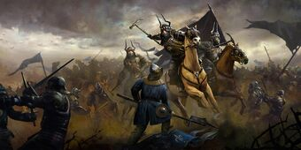

Welcome to The Witcher III
The Witcher universe is a perilous and endlessly interesting place. It is a world fraught with dangerous monsters and equally dangerous people. Its lore is deep and complex, with The Witcher III taking place in the 25th century. In this universe, humanity is fifteen centuries old, meaning it emerged around the 10th century.
When humanity first emerged, they were nothing but refugees and intruders to the 25 century old race of elves known as the Aen Seidhe. Their existence was a primal fight for survival in a harsh new environment. However, the last five centuries have seen the meteoric rise of humanity as a race and the conquest of most known lands, formerly ruled by elves, by humans.
